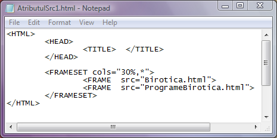

Atributul src
Atributul src are ca valoare adresa paginii web care va fi afisata in cadrul
respectiv. In cazul in care pagina web care trebuie incarcata se gaseste in acelasi dosar,
atunci este suficienta specificarea doar a numelui fisierului. In cazul in care fisierul html
care trebuie incarcat se afla in alt dosar, atunci trebuie specificata intreaga adresa: unitatea
de disc, dosarele si subdosarele si in final numele fisierului. De remarcat este faptul ca
trebuie precizat numele complet, inclusiv extensia fisierului.
Mai jos este prezentat codul unei pagini web cu doua cadre coloana, in cadrul din stanga
fiind incarcata pagina web Birotica.html iar in cadrul drept pagina web ProgrameBirotica.html.
Aceste fisiere sunt incarcate in cele doua cadre prin atributul src al fiecarei etichete FRAME.
Click pe cod pentru a deschide pagina web.

Inapoi la cadre...